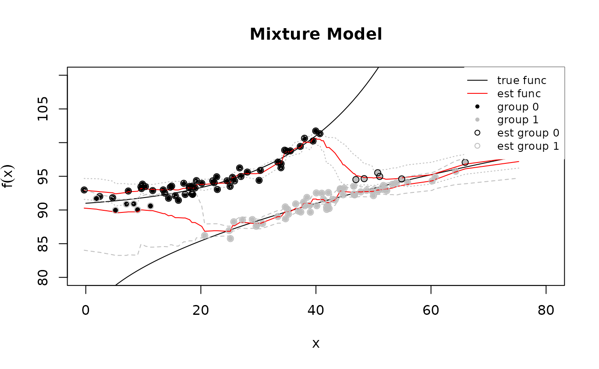

Building a Gibbs Sampler with dbarts
Vincent Dorie
2026-08-19
Source:vignettes/gibbs_sampler_mixture_model.Rmd
gibbs_sampler_mixture_model.RmdFor users who are comfortable with writing their own posterior
samplers, dbarts makes it easy to incorporate a linear BART
component in a Gibbs sampler. In the example below, we fit a functional
mixture model, where observations may have come from one of two
underlying functions and class membership is unobserved.
Model
Performing inference conditional on , we assume that:
and that is unobserved. To make the model fully Bayesian, we impose a prior on . and have implicit priors defined by BART.
Conditional Posteriors
To implement a Gibbs sampler, we will have to produce updates for and . After writing down the joint distribution of , , , , and , we have:
where is the density of a normal distribution. This yields an overall strategy of:
- Draw a sample from BART
- Draw samples of and
- Draw a sample of
- Use , , and to draw a sample of
- Use to draw a sample of
Simulated Data
To illustrate, we create some toy data. The simulated data is visualized later, together with the fitted model.
# Underlying functions
f0 <- function(x) 90 + exp(0.06 * x)
f1 <- function(x) 72 + 3 * sqrt(x)
set.seed(2793)
# Generate true values.
n <- 120
p.0 <- 0.5
z.0 <- rbinom(n, 1, p.0)
n1 <- sum(z.0); n0 <- n - n1
# In order to make the problem more interesting, x is confounded with both
# y and z.
x <- numeric(n)
x[z.0 == 0] <- rnorm(n0, 20, 10)
x[z.0 == 1] <- rnorm(n1, 40, 10)
y <- numeric(n)
y[z.0 == 0] <- f0(x[z.0 == 0])
y[z.0 == 1] <- f1(x[z.0 == 1])
y <- y + rnorm(n)
data_train <- data.frame(y = y, x = x, z = z.0)
data_test <- data.frame( x = x, z = 1 - z.0)Implementing a Gibbs Sampler
For this specific model, the sampler needs to be updated with new
predictor variables/covariates. This can be done with a
dbartsSampler reference class object by calling the
sampler$setPredictor function. As, given any
,
the sampler also needs to evaluate
,
we utilize the test slot of the sampler and keep it up-to-date with the
“counterfactual” predictor using the
sampler$setTestPredictor function. Models that instead
modify the response variable can use the
sampler$setResponse or sampler$setOffset
functions.
One complication in updating the predictor matrix while the sampler
runs is that new values of
must leave the sampler in an internally consistent state. During warmup
this constraint is ignored; after warmup is complete, rejection sampling
is used to guarantee that no leaf nodes are empty. This is accomplished
by using the forceUpdate argument to
setPredictor and checking that the logical response is
TRUE.
n_warmup <- 100
n_samples <- 500
n_total <- n_warmup + n_samples
# Allocate storage for result.
samples_p <- rep.int(NA_real_, n_samples)
samples_z <- matrix(NA_real_, n_samples, n)
samples_mu0 <- matrix(NA_real_, n_samples, n)
samples_mu1 <- matrix(NA_real_, n_samples, n)
library(dbarts, quietly = TRUE)
# We only need to draw one sample at a time, although for illustrative purposes
# a small degree of thinning is done to the BART component.
control <- dbartsControl(updateState = FALSE, verbose = FALSE,
n.burn = 0L, n.samples = 1L, n.thin = 3L,
n.chains = 1L)
# We create the sampler with a z vector that contains at least one 1 and one 0,
# so that all of the cut points are set correctly.
sampler <- dbarts(y ~ x + z, data_train, data_test, control = control)
# Sample from prior.
p <- rbeta(1, 1, 1)
z <- rbinom(n, 1, p)
# Ignore result of this sampler call
invisible(sampler$setPredictor(x = z, column = 2, forceUpdate = TRUE))
sampler$setTestPredictor(x = 1 - z, column = 2)
sampler$sampleTreesFromPrior()
for (i in seq_len(n_total)) {
# Draw a single sample from the posterior of f and sigma^2.
samples <- sampler$run()
# Recover f(x, 1) and f(x, 0).
mu0 <- ifelse(z == 0, samples$train[,1], samples$test[,1])
mu1 <- ifelse(z == 1, samples$train[,1], samples$test[,1])
p0 <- dnorm(y, mu0, samples$sigma[1]) * (1 - p)
p1 <- dnorm(y, mu1, samples$sigma[1]) * p
p.z <- p1 / (p0 + p1)
z <- rbinom(n, 1, p.z)
if (i <= n_warmup) {
sampler$setPredictor(x = z, column = 2, forceUpdate = TRUE)
} else while (sampler$setPredictor(x = z, column = 2) == FALSE) {
z <- rbinom(n, 1, p.z)
}
sampler$setTestPredictor(x = 1 - z, column = 2)
n1 <- sum(z); n0 <- n - n1
p <- rbeta(1, 1 + n1, 1 + n0)
# Store samples if no longer warming up.
if (i > n_warmup) {
offset <- i - n_warmup
samples_p[offset] <- p
samples_z[offset,] <- z
samples_mu0[offset,] <- mu0
samples_mu1[offset,] <- mu1
}
}
Saveing the sampler
To use save and load on the sampler, it
must first be told to write its state out as an R
object:
sampler$storeState()Visualizing the Result
Finally, we visualize the results. In the graph below, the estimated label of observations encircles the true labels, both of which are represented by point color. We see that, beyond the range of the observed data, the estimated functions regress towards each other and points start to be mislabeled.
mean_mu0 <- apply(samples_mu0, 2, mean)
mean_mu1 <- apply(samples_mu1, 2, mean)
ub_mu0 <- apply(samples_mu0, 2, quantile, 0.975)
lb_mu0 <- apply(samples_mu0, 2, quantile, 0.025)
ub_mu1 <- apply(samples_mu1, 2, quantile, 0.975)
lb_mu1 <- apply(samples_mu1, 2, quantile, 0.025)
curve(f0(x), 0, 80, ylim = c(80, 110), ylab = expression(f(x)),
main = "Mixture Model")
curve(f1(x), add = TRUE)
points(x, y, pch = 20, col = ifelse(z.0 == 0, "black", "gray"))
lines(sort(x), mean_mu0[order(x)], col = "red")
lines(sort(x), mean_mu1[order(x)], col = "red")
# Add point-wise confidence intervals.
lines(sort(x), ub_mu0[order(x)], col = "gray", lty = 2)
lines(sort(x), lb_mu0[order(x)], col = "gray", lty = 2)
lines(sort(x), ub_mu1[order(x)], col = "gray", lty = 3)
lines(sort(x), lb_mu1[order(x)], col = "gray", lty = 3)
# Without constraining z for an observation to 0/1, its interpretation may be
# flipped from that which generated the data.
mean_z <- ifelse(apply(samples_z, 2, mean) <= 0.5, 0L, 1L)
if (mean(mean_z != z.0) > 0.5) mean_z <- 1 - mean_z
points(x, y, pch = 1, col = ifelse(mean_z == 0, "black", "gray"))
legend("topright", c("true func", "est func", "group 0", "group 1",
"est group 0", "est group 1"),
lty = c(1, 1, NA, NA, NA, NA), pch = c(NA, NA, 20, 20, 1, 1),
col = c("black", "red", "black", "gray", "black", "gray"),
cex = 0.8, box.col = "white", bg = "white")
Several Forests with Multipliers
The sampler above holds one function. A model may want several, each entering the response through a multiplier the outer loop knows:
where are separate sums of trees and is a known per-observation scalar - an exposure, a dose, a treatment indicator, a group loading. Bayesian causal forests is the case with and .
One dbartsSampler per forest composes this in R, and the
composition is ordinary backfitting once the multiplier is folded in.
Given the residual
,
forest
’s
leaf conditionals want response
and precision weight
;
those are the two channels the loop writes, with setSigma
for the third and run(0L, 1L) to advance one sweep.
updateScale = FALSE (the default) is what makes the swap
coherent: every sweep’s residual is read on the scale creation fixed, so
the leaf prior keeps meaning what it meant.
A multiplier at or near zero says the row carries no information about that forest. Divide anyway and the response is amplified without bound, so the recipe snaps such a row to an exactly zero response paired with its exactly zero weight - which is what the engine does internally, at .
set.seed(919)
n.mf <- 200L
x.mf <- matrix(runif(n.mf * 3L), n.mf, 3L)
z.mf <- rbinom(n.mf, 1L, 0.5)
g1.true <- 2 * sin(pi * x.mf[, 1L])
g2.true <- 1 + 2 * x.mf[, 2L]
y.mf <- g1.true + z.mf * g2.true + rnorm(n.mf, 0, 0.5)
# the known per-observation multipliers, one vector per forest
m <- list(rep(1, n.mf), as.double(z.mf))
K <- length(m)
control.mf <- dbartsControl(n.chains = 1L, n.threads = 1L, n.trees = 25L,
updateState = FALSE)
# every sampler is built on the SAME response, with k fixed and sigma owned
# by the outer loop
samplers <- lapply(seq_len(K), function(f)
dbarts(x.mf, y.mf, control = control.mf, node.prior = normal(k = 1),
resid.prior = fixed(1)))
# one prior budget divided among the forests, rather than K copies of the
# budget for the whole of the sum
base.mf <- samplers[[1L]]$getCalibration()[1L, "prior.scale"]
for (s in samplers) s$setCalibration(prior.scale = base.mf / sqrt(K))
g <- rep(list(rep(0, n.mf)), K)
sigma.mf <- 1
n.keep <- 200L
keep.g2 <- matrix(0, n.mf, n.keep)
for (i in seq_len(100L + n.keep)) {
for (f in seq_len(K)) {
r <- y.mf - Reduce(`+`, Map(`*`, m[-f], g[-f]))
zero <- abs(m[[f]]) < sqrt(.Machine$double.eps)
samplers[[f]]$setResponse(ifelse(zero, 0, r / ifelse(zero, 1, m[[f]])),
updateScale = FALSE)
samplers[[f]]$setWeights(m[[f]]^2)
samplers[[f]]$setSigma(sigma.mf)
samplers[[f]]$run(0L, 1L)
g[[f]] <- as.numeric(samplers[[f]]$getFitsWithoutOffset())
}
# sigma is drawn in R, against the COMBINED residual
resid.mf <- y.mf - Reduce(`+`, Map(`*`, m, g))
sigma.mf <- sqrt(sum(resid.mf^2) / rchisq(1L, n.mf))
if (i > 100L) keep.g2[, i - 100L] <- g[[2L]]
}
c(recovery = cor(rowMeans(keep.g2), g2.true), sigma = sigma.mf, truth = 0.5)## recovery sigma truth
## 0.8833036 0.4429644 0.5000000What it costs
Measured on one machine against a single batched engine sampler at matched total trees - the denominator matters, and a price quoted without one says nothing - K samplers driven a sweep at a time cost about 1.9-2.1 times that sampler at and 4.6-5.2 times at , growing roughly linearly in : each sampler pays its own per-sweep response install, weight install and result allocation over the full data. Driving one sampler a sweep at a time rather than in a batch is a separate and much smaller charge, about 1.1x.
Five things the recipe does not get
- No joint move on the multipliers. If the outer loop also draws the , it draws them in a block alternating with the forests. A sampler that holds both can interweave them instead, and the two mix differently whenever a forest and its multiplier are jointly weakly identified.
- The division is yours. The caller forms and so owns the conditioning, including the snap above.
- quantized predictor stores and sampler states, where one sampler holding forests keeps one of each.
- leaf calibrations to state, one per sampler, rather than a single calibration stated across the forests at creation.
- A serial outer loop. The forests are drawn one after another in R, so the composition cannot spread them across threads.
Graduating to a multi-forest sampler
dbarts(..., forests = list(forest(), forest(basis = ~ factor(z))))
fits this model in one sampler, and the question a prototype should be
able to ask is whether moving to it changes the posterior being
targeted.
The additive decomposition ports exactly. What does not port by itself is prior shape. The two routes agree only if the caller
- centres
at its midrange, or absorbs the response transform’s shift with
setOffset: each single-forest sampler’s reported fit carries that shift, so the composition attributes it once per forest where the sampler attributes it once; - pins the leaf prior identically -
node.prior = normal(k)with fixed, every sampler built on a common , andupdateScale = FALSEthroughout; - accepts that with a multiplier far from 1 the internal response a forest sees leaves the band its leaf prior was calibrated for.
Without (1) and (2) the two routes are different priors that agree closely. With them the remaining difference is the leaf calibration alone. Measured on a pinned two-forest sampler against the recipe above, at over eight chains: with the remedies the posterior mean conditional effect agreed to 3.4% pointwise, inside Monte Carlo error in root-mean-square; without them the difference was 11.9% pointwise and several times Monte Carlo error. Both recovered the truth about equally well, which is the point - the difference is a prior, not a defect.
State equally plainly what the recipe does not reach and never will:
a response family, link or latent structure the sampler does not
provide, and a leaf or hyperprior law it does not provide. Those are
selected by argument, not composed in R. forest() carries
the same scale knobs the composition sets by hand, and
$setForestBasis, $setForestWeights and
$getForestAmplitudes are the post-creation routes into a
multi-forest sampler, so a prototype ports without changing the model it
targets.
Response Families
Everything above fits a continuous response, dbarts’s
default (family = "auto", which chooses
"gaussian" for a continuous
and "probit" for one coded 0/1). family can
also be set to "gaussian", "probit", or
"logistic" explicitly. The two binary families model
for a link
and the sum-of-trees
,
and report fits and predictions on that latent scale rather than as
probabilities (pnorm/plogis recovers the
probability from it). Probit takes
to be the standard normal CDF; logistic uses Polya-Gamma augmentation
and takes
to be the logistic CDF, whose latent variable has heavier tails than
probit’s, so the leaf-value prior widens to match
(node.scale becomes pi * sqrt(3) in place of
probit’s 3, keeping the same span of
relative to the response).
DART
When only a handful of predictors out of many are relevant, the CGM
tree prior’s uniform choice of split variable wastes proposals on the
rest. tree.prior = dart(...) replaces it with a Dirichlet
prior over split-variable probabilities (Linero 2018): the sampler
learns which variables matter and increasingly proposes splits on them,
which doubles as a variable-importance diagnostic.
set.seed(12)
n.dart <- 60
x.dart <- matrix(runif(n.dart * 8), n.dart)
y.dart <- 4 * x.dart[, 1] + rnorm(n.dart, 0, 0.2)
fit.dart <- dbarts(y.dart ~ x.dart, tree.prior = dart(),
control = dbartsControl(n.trees = 10L, n.burn = 100L,
n.chains = 1L, n.threads = 1L))
samples.dart <- fit.dart$run(100L, 30L)
# One row per predictor, averaged over the retained samples: only the first
# column of x.dart drives y.dart, and its split probability dominates.
round(rowMeans(samples.dart$varprobs), 3)## [1] 0.681 0.117 0.008 0.013 0.007 0.017 0.012 0.145The Dirichlet concentration alpha is itself sampled by
default (update.alpha = TRUE); a smaller alpha
concentrates the split probabilities more aggressively.
?dbartsPriors documents the rest of dart’s
arguments.
Data Frames, Factors, and Missing Values
dbarts and bart2 take a
data.frame directly, and
(factors = "categorical", the default for both) an
unordered factor predictor becomes a single categorical column: its
splits send a subset of levels down each branch, rather than the
one-indicator-per-level expansion bart still uses.
factors = "indicators" recovers that expansion on either
function, useful for comparing the two. Ordered factors always code as
ordinal, on their integer levels, regardless of
factors.
Missing predictor values need not be removed beforehand. The default
missing = "incorporate" gives every split rule a learned
direction for NA: an observation whose split variable is
missing follows that rule’s direction (“Missing Incorporated in
Attributes”, Twala et al. 2008), estimated jointly with the rest of the
tree. missing = "error" instead rejects any predictor
containing NA.
set.seed(13)
n.miss <- 60
g <- factor(sample(c("a", "b", "c"), n.miss, replace = TRUE))
x.miss <- rnorm(n.miss)
x.miss[sample(n.miss, 10)] <- NA
y.miss <- ifelse(g == "a", 2, -1) +
ifelse(is.na(x.miss), 0, x.miss) + rnorm(n.miss, 0, 0.2)
df.miss <- data.frame(y = y.miss, x = x.miss, g = g)
fit.miss <- bart2(y ~ x + g, df.miss, n.trees = 10L, n.chains = 1L,
n.threads = 1L, n.samples = 20L, n.burn = 20L,
verbose = FALSE)g above ingests as one categorical predictor with three
levels rather than two indicator columns, and the ten missing values of
x are incorporated rather than dropped.
Multiple Threading
When implementing a Gibbs sampler using dbarts in R, it
is most often the case that multiple threads will need to be handled by
creating separate copies of the sampler and data. While
dbartsSamplers are natively multithreaded, few of their
slots are stored independently across chains. For an example of this
approach and a more complete implementation of the principles in this
document, consult the implementation of rbart_vi.
This custom-loop bookkeeping is only needed when embedding BART in a
larger sampler. A plain multi-chain
bart2/rbart_vi fit already tracks its chain
dimension: summary() reports split-R-hat and effective
sample size for the scalar parameters (sigma,
k, and, for rbart_vi, tau) when
the posterior package is installed, and
as_draws_array/as_draws_df convert its
chain-dimensioned draws to posterior’s array/data frame
conventions.